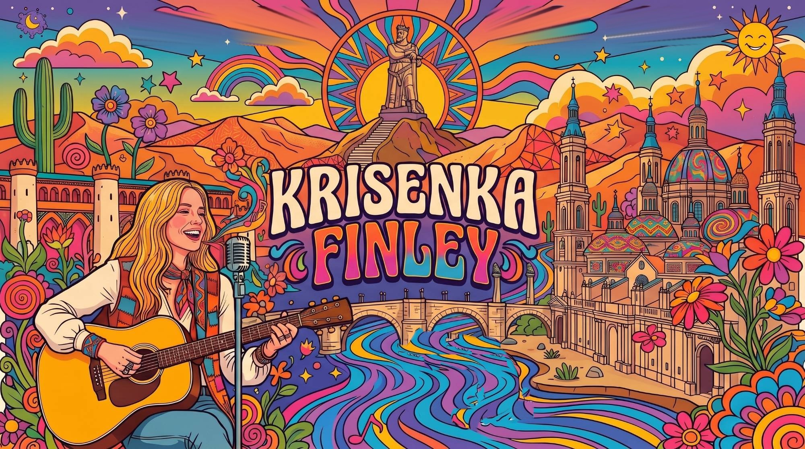
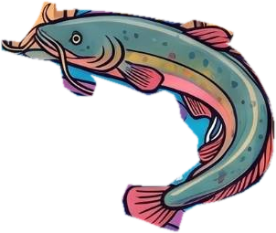
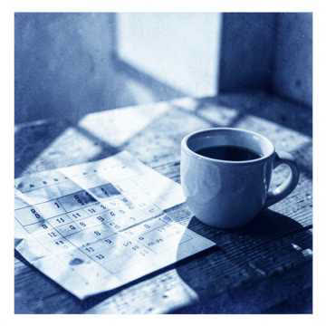

Un paseo por su Zaragoza psicodélica que acaba en concierto. Mejor con sonido.
Cantautora de Zaragoza. Folk, country-rock y raíces latinas.
Voz, guitarra
y fuego.
Cantautora, compositora, arreglista y productora. Mezcla el folk celta, el country americano, el rock de los 70 y sus raíces latinas. Y es madre.
Del escenario
al estudio.
- Gira con Ibercaja2003 – 2006
- Mejor solistaNominada, Premios de la Música Aragonesa 2007
- Premios internacionalesVoz, composición, letra y producción
Cuatro discos,
una voz.
Ahora suena «Back Again». Pulsa un vinilo para abrir su caja.

Ahora suena
Back Again
0:00 / 3:29